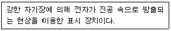
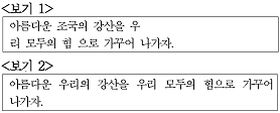
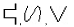
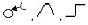
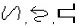
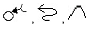
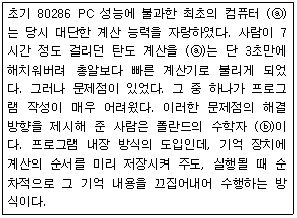

워드프로세서-(구-1급) (2011-03-06 기출문제)
1과목: 워드프로세싱 일반
1. 다음 보기에서 설명하고 있는 표시 장치는 어느 것인가?

- 음극선관(CRT; Cathode Ray Tube)
- 액정 디스플레이(LCD; Liquid Crystal Display)
- 플라즈마 디스플레이(PDP; Plasma Display Panel)
- 전계 방출형 디스플레이(FED; Field Emission Display)
(정답률: 57%)

2. 다음 중 전자출판 기술로 이용되는 하이퍼링크의 필수 구성 요소가 아닌 것은?
- 노드
- 링크
- 프로토콜
- 인터페이스
(정답률: 48%)
3. 다음은 영문 입력 방법에 대한 설명이다. 잘못된 것은?
- 한글과 영문에 대한 입력 모드를 영문으로 맞추고 입력 한다.
- 한/영 변환키는 워드프로세서에 따라 [한/영], 왼쪽 [Shift]+[Spacebar], 오른쪽 [Alt]를 사용하기도 한다.
- 대·소문자는 [Caps Lock]이나 [Shift]를 이용해 입력한다.
- 상태이면 영문 입력이 가능하다.
(정답률: 74%)
4. 다음 중 공문서에서 관인을 찍는 위치를 올바르게 설명한 것은?
- 기관 또는 직위 명칭의 첫 자가 인영의 가운데 오도록 찍는다.
- 기관 또는 직위 명칭의 끝자와 그 바로 앞글자의 가운데 오도록 인영을 찍는다.
- 기관 또는 직위 명칭의 끝자가 인영의 가운데 오도록 찍는다.
- 기관 또는 직위 명칭의 중간에 인영을 찍는다.
(정답률: 71%)
5. 다음 중 하이퍼미디어(Hypermedia)에 대한 설명으로 옳지 않은 것은?
- 하이퍼텍스트 구조를 멀티미디어까지 이용 범위를 확장시켜 정보를 활용하는 방법이다.
- 문서 내의 특정한 부분을 보다가 그에 관련된 다른 부분에 관한 내용은 문서 사이의 연결을 따라 가면서 참조하는 방식이다.
- 주로 인터넷이나 문서 도움말등 에 사용된다.
- 화면에 표시된 자료, 즉 문자, 그림, 동영상 등을 하나의 파일에 저장하므로 문서 관리가 용이하다.
(정답률: 57%)
6. 다음 중 매크로(Macro) 기능에 대한 설명으로 옳지 않은 것은?
- 매크로는 동일한 내용의 반복 입력이나 도형, 서식 등을 여러 곳에 반복 적용할 때 효과적이다.
- 매크로는 사용자가 기억하기 쉽도록 이름을 붙일 수 있다.
- 매크로는 별도의 파일로 저장해 두거나 정의된 매크로를 다시 편집할 수 있다.
- 매크로는 키보드 입력을 기억할 수 있지만 마우스 동작을 포함한 사용자의 모든 동작을 기억할 수 없다.
(정답률: 72%)
7. 다음 한자 입력 방법 중 한자음을 모를 때 입력하는 방법으로 옳은 것은?
- 단어 단위 변환 방법
- 문장 자동 변환 방법
- 부수 입력 방법
- 음절 단위 변환 방법
(정답률: 64%)
8. 다음 중 전자출판에서 사용되는 글꼴의 크기 단위로 가장 많이 사용되는 것은?
- 퍼센트(%)
- 밀리미터(mm)
- 도트(Dot)
- 포인트(Point)
(정답률: 78%)
9. 다음 중 기억장치에 대한 설명으로 옳은 것은?
- ROM은 비휘발성 메모리로 주로 BIOS나 글자 폰트를 기록하는데 사용된다.
- 가상메모리(Virtual Memory)는 주기억장치의 일부를 보조기억장치처럼 사용하는 것을 의미한다.
- RAM은 휘발성 메모리로 보통 SRAM과 DRAM이 있으며, 주기적인 재충전이 필요한 것은 SRAM이다.
- 버퍼 메모리(Buffer Memory)는 비휘발성 메모리이며, MP3 플레이어, 디지털 카메라 등에 사용된다.
(정답률: 38%)
10. 특정 워드프로세서로 만든 문서를 다른 워드프로세서를 이용하여 읽거나 출력하려고 할 때 원래의 문서와 가장 가까운 형태로 변환하려면 어떤 형식으로 저장하는 것이 좋은가?
- 일반 텍스트 파일(*.txt)
- HTML 문서(*.html)
- 서식 있는 문자열(*.rtf)
- 자동 저장 파일(*.asv)
(정답률: 50%)
11. 다음 중 문서 전체의 글꼴을 한꺼번에 바꾸려고 할 때 문서 전체를 한꺼번에 영역 설정하는 방법과 거리가 가장 먼 것은?
- [F4]를 누른 후 [Ctrl]+[End]를 누른다.
- [편집] 메뉴에서 [모두 선택]을 선택한다.
- 문서 내의 임의의 위치에서 [Ctrl]+[A]를 누른다.
- 문서 내의 한 행 왼쪽 끝에서 마우스 포인터가 화살표로 바뀌면 세 번 클릭한다.
(정답률: 58%)
12. 다음 중 글꼴(Font)의 구성 방식에 대한 설명으로 옳지 않은 것은?
- 비트맵(Bitmap) : 점(Dot)으로 글꼴을 표현하는 방식이다.
- 포스트스크립트(Postscript) : 글자의 외곽선 정보를 각종 소프트웨어에 제공하며, 위지윅을 지원할 수 있다.
- 오픈타입(Opentype) : 외곽선 글꼴 형태로 고도의 압축을 통해 용량을 줄여 통신을 이용한 폰트의 전송을 간편하게 할 수 있다.
- 벡터(Vector) : 글자를 선, 곡선으로 처리한 글꼴로 확대하면 테두리 부분이 계단 모양으로 변형되어 흐려진다.
(정답률: 61%)
13. 결재권자가 휴가, 출장 기타의 사유로 결재할 수 없는 때에는 그 직무를 대리하는 자가 대결할 수 있되, 그 내용이 중요한 문서에 대하여는 결재권자에게 후에 어떻게 조처하여야 하는가?
- 사후에 보고한다.
- 사후에 반드시 결재를 받는다.
- 정규 결재과정을 다시 거친다.
- 내부 결재과정을 거친 후 시행한다.
(정답률: 63%)
14. 다음 중 인쇄용지에 대한 설명으로 옳지 않은 것은?
- 공문서의 표준 규격은 A4 크기이다.
- 낱장 용지는 번호가 클수록 용지의 면적이 더 작다.
- 낱장 용지는 같은 번호일 때 A판이 B판보다 더 크다.
- 낱장 용지는 전지의 종류인 A판과 B판을 분할하여 분할 횟수로 용지의 규격을 표시한다.
(정답률: 70%)
15. 다음 중 전자출판(Electronic Publishing) 용어에 대한 설명으로 옳은 것은?
- 커닝(Kerning) : 현재 줄의 시작 부분과 바로 아래 줄의 첫 부분까지의 간격
- 리딩(Leading) : 제한된 색상을 조합 또는 비율을 변화하여 새로운 색을 만드는 작업
- 스프레드(Spread) : 대상체의 컬러가 배경색의 컬러보다 옅을 때 배경색에 가려 대상체가 보이지 않는 현상
- 디더링(Dithering) : 기존의 그림을 다른 형태로 새롭게 변형, 수정하는 작업
(정답률: 66%)
16. 다음 중 공문서의‘끝’을 표시하는 방법에 대한 설명으로 옳지 않은 것은?
- 첨부물이 있는 경우에는 붙임의 표시문 끝에 1자(2타) 띄우고 ‘끝’ 표시를 한다.
- 기재 사항이 서식의 마지막 칸까지 작성되는 경우 서식의 칸 밖의 아래 왼쪽 기본선에서 1자(2타)를 띄우고 ‘끝’ 표시를 한다.
- 기재 사항이 서식의 칸 중간에서 끝난 경우에는 다음 줄의 왼쪽 기본선에서 1자(2타) 띄우고 ‘끝’ 표시를 한다.
- 본문이 끝났을 경우에는 본문의 끝에서 1자(2타) 띄우고 ‘끝’ 표시를 한다.
(정답률: 50%)
17. 다음 중 유니코드(KS X 10⑤-1)에 대한 설명으로 옳지 않은 것은?
- 한글 모두를 가나다순으로 정렬하였다.
- 영문자와 공백도 2바이트로 처리한다.
- 전 세계에서 사용하는 거의 모든 문자의 표현이 가능한 국제 표준 코드이다.
- 정보교환 시 충돌이 발생하여 정보 교환용보다는 정보처리용으로 사용된다.
(정답률: 66%)
18. 다음 중 검색과 치환에 대한 설명으로 옳지 않은 것은?
- 표내에 들어있는 특정 단어의 위치를 쉽게 찾을 수 있다.
- 한자나 특수문자에 대해서도 검색이 가능하다.
- 치환할 때 사용자가 정의해 놓은 스타일은 적용할 수 없다.
- 한글 단어를 한자 단위나 영문 단위로 치환할 수 있다.
(정답률: 74%)
19. <보기 1>의 문장이 <보기 2>의 문장으로 수정되기 위해 필요한 교정부호들로만 올바르게 짝지어진 것은?





(정답률: 70%)
20. 다음 중 교정부호에 대한 설명으로 옳지 않은 것은?
- : 문서에서 줄 간격을 띄우라는 부호이다.
- : 단어나 문자의 위치를 변경하라는 부호이다.
- : 지정된 부분을 아래로 내리라는 부호이다.
- : 불필요한 내용을 삭제하는 부호이다.
(정답률: 69%)
2과목: PC 운영 체제
21. 다음 중 한글 Windows XP에서 바탕 화면의 바로 가기 메뉴에서 수행 가능한 작업으로 옳지 않은 것은?
- [디스플레이 등록 정보] 창을 사용하여 바탕 화면의 해상도를 변경할 수 있다.
- 바탕 화면의 아이콘을 큰 아이콘, 아이콘, 간단히 등으로 지정할 수 있다.
- 바탕 화면에 있는 아이콘의 표시 유무를 지정할 수 있다.
- 폴더나 파일, 바로 가기 아이콘을 만들 수 있다.
(정답률: 36%)
22. 다음 중 Windows XP에서 파일 및 폴더를 검색하기 위한 [검색 결과] 창에서 사용할 수 없는 조건을 가진 파일은?
- ‘홍길동’이라는 사용자가 만든 파일
- 크기가 200KB 이하인 파일
- 확장자가 ‘mp3’인 파일
- 2011년 1월 27일에 수정한 파일
(정답률: 45%)
23. 다음 중 한글 Windows XP에서 연결 프로그램에 대한 설명으로 옳지 않은 것은?
- 문서나 그림 같은 특정한 데이터 파일을 더블 클릭하면 자동으로 실행되는 응용 프로그램으로, 파일의 확장자에 의해 결정된다.
- 특정한 데이터 파일의 바로 가기 메뉴에서 [연결 프로그램]-[프로그램 선택]을 선택하면 연결 프로그램을 변경할 수 있다.
- 특정한 데이터 파일을 더블 클릭하면 연결 프로그램을 선택하기 위한 [Windows] 창이 표시되는데, 이는 현재 연결 프로그램이 지정되지 않았다는 의미이다.
- [연결 프로그램] 대화 상자에서 연결 프로그램을 삭제하면 연결된 데이터 파일도 삭제된다.
(정답률: 60%)
24. 다음 중 한글 Windows XP에서 파일 및 폴더 관리에 관한 설명으로 옳지 않은 것은?
- 폴더 내에서 파일이나 하위 폴더의 이름을 바꿀 때는 항목을 선택한 후에 [파일] 메뉴의 [이름 바꾸기] 항목을 선택한다.
- 파일이나 폴더가 복사 또는 이동할 때 잠시 기억되는 임시 기억장소를 클립보드라고 한다.
- 마우스로 드래그하여 복사할 때에는 마우스 포인터의 오른쪽 아래에 + 표시가 나타난다.
- 파일과 폴더는 계층적 구조로서 언제나 파일은 폴더들을 포함한다.
(정답률: 49%)
25. 다음 중 한글 Windows XP에서 [폴더 옵션] 창에 관한 설명으로 옳지 않은 것은?
- [파일 형식] 탭은 현재 Windows에 등록된 파일 형식을 표시한다.
- [보기] 탭에서 숨김 파일을 표시할 수 있게 설정할 수 있다.
- [일반] 탭에서 마우스의 커서를 해당 파일에 올려놓으면 자동으로 열리도록 지정할 수 있다.
- 제어판 [폴더 옵션]을 선택하거나 폴더 창에서 [도구]-[폴더 옵션]을 선택하면 표시된다.
(정답률: 60%)
26. 다음 중 한글 Windows XP의 [그림판] 프로그램의 기능에 대한 설명으로 옳지 않은 것은?
- 개체 삽입 기능이나 레이어 작업 기능을 이용하여 다양한 그림을 그릴 수 있다.
- jpg, gif, bmp 파일과 같은 그림 파일을 그림판에서 작업할 수 있다.
- 그림판에서 그림을 그린 다음에 다른 문서에 붙여 넣거나 바탕 화면 배경으로 사용할 수 있다.
- 흑백이거나 컬러 그림을 그릴 수 있으며 비트맵 파일로 저장할 수 있다.
(정답률: 57%)
27. 한글 Windows XP의 바탕 화면에서 사용하는 바로 가기 아이콘에 대한 설명으로 옳은 것은?
- 파일, 폴더 등의 바로 가기 메뉴에서 [보내기]-[바탕화면에 바로 가기 만들기]를 클릭하면 바탕 화면에 바로 가기 아이콘을 만들 수 있다.
- 바로 가기 아이콘을 만들려고 하는 파일, 폴더, 프린터 등의 항목 위에서 마우스의 오른쪽 버튼을 더블 클릭하면 바로 가기 아이콘이 만들어진다.
- 바탕 화면에 있는 바로 가기 아이콘 위에서 마우스의 오른쪽 버튼을 더블 클릭하면 바로 가기 아이콘이 삭제된다.
- 실행 프로그램에 대한 바로 가기 아이콘을 삭제하려면 반드시 [프로그램 추가/제거]를 사용해야만 한다.
(정답률: 55%)
28. 다음 중 한글 Windows XP에서 [네트워크 설정 마법사]를 이용하여 구현할 수 없는 것은?
- 프린터 공유
- 파일 및 폴더 공유
- 인터넷 연결 공유
- 방화벽 공유
(정답률: 56%)
29. 다음 중 한글 Windows XP의 네트워크 환경에서 폴더의 공유에 관한 설명으로 옳지 않은 것은?
- 공유 이름은 네트워크상에서 표시되는 공유 폴더의 이름이다.
- 네트워크 사용자가 내 파일을 변경할 수 있도록 설정할 수 있다.
- Windows 시스템 폴더에 대해서 공유 옵션을 사용하여 공유를 설정할 수 있다.
- Guest 계정으로 로그온하면 공유 파일을 만들 수 없다.
(정답률: 23%)
30. 한글 Windows XP의 [장치 관리자] 창에서 장치명 앞에 느낌표()가 있을 경우의 이유로 옳지 않은 것은?
- 해당 장치를 위한 장치 드라이버를 로드할 수 없기 때문이다.
- 다른 장치와 IRQ 충돌이 일어났기 때문이다.
- 해당 장치의 리소스 설정이 자동이 아닌 수동으로 되어 있기 때문이다.
- 잘못된 장치 드라이버가 설치되었기 때문이다.
(정답률: 57%)
31. 한글 Windows XP의 [보조프로그램]에 있는 [시스템 정보]에 대한 설명으로 옳지 않은 것은?
- [시스템 정보]는 로컬 및 원격 컴퓨터의 구성 정보를 수집하고 표시한다.
- 내 시스템의 하드웨어 리소스와 소프트웨어 환경 등을 보여준다.
- [파일] 메뉴의 [내보내기]를 이용하여 시스템 정보를 텍스트 파일로 저장할 수 있다.
- 구성 요소 항목에는 시스템 드라이버 등 소프트웨어의 파일명, 상태 등이 표시된다.
(정답률: 23%)
32. 한글 Windows XP에 설치된 프린터의 인쇄관리자 창에서 [프린터] 메뉴를 이용하여 할 수 있는 작업으로 옳지 않은 것은?
- 해당 프린터가 기본프린터로 설정되었는지 파악할 수 있다.
- 해당 프린터의 공유를 설정할 수 있다.
- 문서의 인쇄를 일시적으로 중지시킬 수 있다.
- 해당 프린터에 인쇄 중인 모든 파일을 디스크에서 삭제 할 수 있다.
(정답률: 63%)
33. 다음 중 Windows XP의 [제어판]에 있는 [내게 필요한 옵션]을 이용하여 수행할 수 있는 작업으로 옳지 않은 것은?
- [소리] 탭에서는 시스템 신호음을 시각적으로 표시하기위하여 소리 탐지 기능을 설정할 수 있다.
- [디스플레이] 탭에서는 커서 옵션을 사용하여 커서의 깜박이는 속도와 커서 너비를 설정할 수 있다.
- [키보드] 탭에서는 키보드의 숫자 키패드로 마우스 포인터를 움직일 수 있도록 설정할 수 있다.
- [일반] 탭에서는 알림 옵션을 사용하여 내게 필요한 옵션 기능이 활성화 되거나 해제될 때 메시지나 신호음을 알려줄 수 있도록 설정할 수 있다.
(정답률: 34%)
34. 다음 중 Windows XP에서 제공하는 디스크 오류 검사 및 디스크 조각 모음에 대한 설명으로 옳은 것은?
- 디스크 오류 검사를 통해 반복된 프로그램의 실행과 삭제 등으로 생긴 파일 시스템 오류를 검사하여 자동으로 수정할 수 있다.
- 디스크 조각 모음의 수행 속도는 디스크 볼륨의 크기, 디스크 볼륨에 조각난 양과는 상관이 없다.
- 디스크의 조각 모음을 수행하면 처리 속도의 향상과 중요한 원본 데이터의 백업을 할 수 있다.
- 플로피 디스크 드라이브, 네트워크 드라이브, 하드디스크 드라이브는 디스크 오류검사를 통해 디스크 내의 불량섹터를 검사하고 복구할 수 있다.
(정답률: 33%)
35. 다음 중 한글 Windows XP에서 마우스의 끌어놓기(Drag& Drop) 기능을 사용하여 할 수 있는 작업으로 옳지 않은 것은?
- 파일이나 폴더를 다른 폴더로 이동하거나 복사할 수 있다.
- 폴더 창의 크기를 조절하거나 이동을 할 수 있다.
- 선택된 파일이나 폴더의 이름 바꾸기를 할 수 있다.
- 파일이나 폴더의 바로 가기 아이콘을 만들 때 사용할 수 있다.
(정답률: 60%)
36. 다음 중 한글 Windows XP에서 [시스템 등록 정보] 창에 관한 설명으로 옳지 않은 것은?
- [하드웨어] 탭에 있는 [장치 관리자] 항목을 선택하면 시스템에 설치된 장치를 검색할 수 있다.
- [고급] 탭에서는 운영체제 버전과 사용자 정보를 검색 할 수 있다.
- [자동 업데이트] 탭에서는 Windows에서 주기적으로 중요한 업데이트를 확인하고 설치할 수 있도록 설정할 수 있다.
- [원격] 탭에서는 다른 컴퓨터에서 해당 컴퓨터를 사용 할 수 있도록 원격 지원을 허용할 수 있다.
(정답률: 45%)
37. 한글 Windows XP에서 사용하는 [원격 지원]에 관한 설명으로 옳지 않은 것은?
- 다른 위치에 있는 상대방이 Windows와 같이 호환되는 운영체제가 실행되는 컴퓨터에서 사용자 컴퓨터를 편리하게 연결하여 문제를 해결할 수 있다.
- 사용자와 도우미는 모두 Microsoft Outlook 또는 Outlook Express 같은 MAPI 호환 전자 메일 계정이나 Windows Messenger Service를 사용해야 한다.
- 사용자와 도우미는 원격 지원을 사용하는 동안에는 인터넷을 사용할 수 없도록 설정된다.
- LAN(Local Area Network)에서 작업 중인 경우에는 방화벽으로 인해 원격 지원을 사용하지 못할 수 있다.
(정답률: 53%)
38. 다음 중 한글 Windows XP에서 바로 가기 아이콘을 만드는 방법으로 옳지 않은 것은?
- 개체를 선택한 후에 바로 가기 메뉴에서 [바로 가기 만들기]를 선택한다.
- [Alt]+[Shift]를 누른 상태로 개체를 선택한 후에 원하는 위치로 마우스 끌어놓기를 한다.
- 바로 가기 아이콘을 복사하여 다른 위치에 붙여 넣기를 한다.
- 폴더 창에서 개체를 선택한 후에 [파일]-[바로 가기 만들기] 메뉴를 선택한다.
(정답률: 53%)
39. 다음 중 한글 Windows XP에서 [도움말 및 지원 센터]에 관한 설명으로 옳지 않은 것은?
- 하이퍼텍스트 방식으로 관련된 도움말 항목으로 이동이 용이하다.
- 도움말을 확인하다가 응용 프로그램을 실행시키거나 인터넷 웹 페이지로 이동할 수 있다.
- 도움말의 내용을 프린터로 출력하거나 수정 또는 새로운 내용을 추가할 수 있다.
- 원격 지원이나 Windows 뉴스 그룹을 이용하여 컴퓨터 사용에 대한 도움말을 요청할 수 있다.
(정답률: 63%)
40. 다음 중 한글 Windows XP의 [보조프로그램]에 있는 [엔터테인먼트]에 포함된 프로그램에 관한 설명으로 옳지 않은 것은?
- [녹음기]를 이용하면 사운드를 녹음하여 ‘.WAV’ 확장자를 갖는 파일로 저장할 수 있다.
- [볼륨 조절]을 이용하면 소리가 나지 않도록 음소거 기능을 설정할 수 있다.
- [Windows Media Player]는 AVI, MPG 등의 동영상 파일을 재생할 수 있다.
- [멀티미디어]를 이용하면 프로그램에서 나오는 음성이나 소리를 화면에 자막으로 표시할 수 있다.
(정답률: 46%)
3과목: 컴퓨터 및 정보활용
41. 컴퓨터의 중앙처리장치는 모든 수를 이진수의 형태로 처리한다. 다음 중 십진수 42를 이진수로 올바르게 표현한 것은?
- 101010
- 101011
- 101001
- 101000
(정답률: 49%)
42. 다음 중 웨이브(WAVE) 방식에 대한 설명으로 옳지 않은 것은?
- 샘플링하여 이를 디지털화한 값으로 저장한다.
- 웨이브(WAVE) 파일을 생성하기 위하여 사운드 카드를 사용한다.
- 음악에서 사용되는 음의 특색을 기호로 정의하여 이의 내용을 저장한다.
- PCM 기법에 의해 생성된 디지털 데이터를 사용한다.
(정답률: 37%)
43. 다음 중 인터넷상에서 보안을 위협하는 유형에 대한 설명으로 옳지 않은 것은?
- 스파이웨어(Spyware) : 사용자 동의 없이 사용자 정보를 수집하는 프로그램
- 분산서비스 거부 공격(DDos) : 데이터 패킷을 범람시켜 시스템의 성능을 저하시킴
- 스푸핑(Spoofing) : 신뢰성 있는 사람이 데이터를 보낸 것처럼 데이터를 위변조하여 접속 시도
- 스니핑(Sniffing) : 악성코드인 것처럼 가장하여 행동하는 프로그램
(정답률: 54%)
44. 다음 중에서 언어 번역기에 의해 생성된 목적 프로그램을 실행 가능한 형태로 주기억장치에 올려주는 프로그램은 무엇인가?
- 링커(Linker)
- 인터프리터(Interpreter)
- 로더(Loader)
- 코프로세서(Coprocessor)
(정답률: 43%)
45. 다음 중 LAN의 특성에 대한 설명으로 옳지 않은 것은?
- 회사, 학교, 연구소 등의 특정 구역 내에서 자원공유를 목적으로 사용하는 통신망이다.
- LAN 프로토콜은 OSI 참조모델의 상위층에 해당된다.
- 오류 발생률이 낮으며, 네트워크에 포함된 자원을 공유할 수 있다.
- 망의 구성 형태에 따라서 성형, 버스형, 링형, 계층형 등으로 분류할 수 있다.
(정답률: 46%)
46. 다음 중 ISO(국제표준화기구)가 정의한 국제표준규격 통신 프로토콜인 OSI 7계층 모델에서 네트워크 종단 사이에 신뢰성 있고 투명한 데이터 전송을 담당하는 계층은?
- 물리 계층(Physical Layer)
- 데이터 링크 계층(Data Link Layer)
- 네트워크 계층(Network Layer)
- 전송 계층(Transport Layer)
(정답률: 47%)
47. 다음 중 운영체제의 구성에서 제어 프로그램에 속하지 않는 것은?
- 감시 프로그램(Supervisor Program)
- 서비스 프로그램(Service Program)
- 데이터 관리 프로그램(Data Management Program)
- 작업 관리 프로그램(Job Management Program)
(정답률: 53%)
48. 다음 중 CMOS 설정에 대한 설명으로 옳지 않은 것은?
- CMOS의 셋업은 시스템 사양에 맞게 사용자가 설정 및 저장할 수 있다.
- 컴퓨터 전원을 끈 후에도 내장 배터리에 의해 작동되며, 컴퓨터를 켜면 곧 동작한다.
- CMOS 설정에서 부팅 우선순위와 Anti-Virus 기능을 설정할 수 없다.
- CMOS는 메인보드의 내장 기능 설정과 주변 장치에 대한 사항을 기록한다.
(정답률: 52%)
49. 컴퓨터 이용의 확산과 함께 정보 보호를 위해서는 시스템을 안전하게 보호하는 것이 매우 중요하다. 아래의 보안 방법에 대한 설명 중 잘못된 것은?
- 개인의 지문을 통해 사용자 인증을 할 수 있다.
- 방화벽을 설치하여 외부에서 들어오는 좋지 않은 정보들의 불법 침입을 막는다.
- 비밀키 암호화 기법은 키의 크기가 크고 알고리즘이 복잡하여 효율성이 떨어지는 단점이 있다.
- 워터마킹을 통해 디지털 콘텐츠에 저작원의 정보를 삽입하여 불법 복제를 막는다.
(정답률: 63%)
50. 다음 중 자기디스크 장치에서 읽기/쓰기 헤드를 접근하려는 트랙(실린더)에 위치시키는데 걸리는 시간을 무엇이라고 하는가?
- 액세스 시간(Access Time)
- 회전 지연 시간(Rotational Latency Time)
- 탐색 시간(Seek Time)
- 전송 시간(Transfer Time)
(정답률: 39%)
51. 네트워크를 연결하는 방식과 컴퓨터들의 역할에 따라 통신망의 형태가 결정된다. 다음 중 피어 투 피어(Peer To Peer) 방식에 대한 설명으로 옳지 않은 것은?
- 컴퓨터와 컴퓨터가 동등하게 연결되는 방식이다.
- 각각의 컴퓨터는 클라이언트인 동시에 서버가 될 수 있다.
- 워크스테이션이나 PC를 단말기로 사용하는 작은 규모의 네트워크에 많이 사용된다.
- 유지보수가 쉬우며, 데이터의 보안이 우수하고 주로 데이터의 양이 많을 때 사용한다.
(정답률: 48%)
52. 다음 내용에서 괄호 ⓐ, ⓑ에 들어갈 용어로 올바르게 짝지어진 것은?

- ⓐ ENIAC ⓑ 폰노이만(Von Neumann)
- ⓐ MARK-I ⓑ 에이컨(Aiken)
- ⓐ EDVAC ⓑ 폰노이만(Von Neumann)
- ⓐ UNIVAC-I ⓑ 에이컨(Aiken)
(정답률: 52%)
53. 압축방식 중 QuickTime에 대한 설명으로 옳지 않은 것은?
- JPEG를 기본으로 한 압축 방식이다.
- 특별한 하드웨어의 추가 없이 동영상을 재생할 수 있다.
- MP3 음악을 지원한다.
- 정지 화상만을 압축하는 방식이다.
(정답률: 44%)
54. 인터넷 기술을 기업 내 정보 시스템에 적용한 것으로 전자 우편 시스템, 전자결재 시스템 등을 인터넷 환경으로 통합하여 사용하는 것을 무엇이라고 하는가?
- 익스트라넷
- 인트라넷
- 고퍼
- 원격 접속
(정답률: 64%)
55. 다음 중 고정 소수점 데이터 표현방법에 대한 설명으로 옳지 않은 것은?
- 연산 속도가 빠르므로 부동 소수점 형식보다 연산 시간은 짧다.
- 부호와 절대치 방식, 부호와 1의 보수방식, 부호와 2의 보수방식이 있다.
- 부동 소수점에 비해 큰 수나 작은 수를 표현할 수 있다.
- 정수 표현형식으로 구조가 단순하다.
(정답률: 44%)
56. 다음 중 컴퓨터의 입력 장치에 해당하지 않는 것은?
- 디지타이저(Digitizer)
- 플로터(Plotter)
- 스캐너(Scanner)
- 광학문자판독기(OCR)
(정답률: 47%)
57. 다음은 응용 소프트웨어에 대한 설명이다. 틀린 것은?
- Oracle, MySQL은 데이터베이스 관리 시스템이다.
- PhotoShop, CoreDraw는 그래픽 소프트웨어다.
- Dreamweaver, FrontPage는 압축 프로그램이다.
- WinAMP, RealPlayer는 음악 파일 재생 프로그램이다.
(정답률: 58%)
58. 다음 중 인터럽트에 대한 설명으로 옳지 않은 것은?
- 외부 인터럽트는 입ㆍ출력 장치, 전원 등의 외부적인 요인에 의해 발생한다.
- 여러 장치에서 동시에 인터럽트가 발생할 경우 우선순위가 높은 인터럽트부터 수행한다.
- 외부 인터럽트는 트랩이라고도 불린다.
- 소프트웨어 인터럽트는 프로그램 처리 중 명령의 수행에 의해 발생한다.
(정답률: 44%)
59. 다음 중 하드디스크의 파티션에 대한 설명으로 옳지 않은 것은?
- 하나의 물리적인 하드디스크를 여러 개의 파티션으로 나눌 수 있다.
- 파티션을 나눈 후에 사용하기 위해서는 포맷을 해야 한다.
- 하나의 하드디스크 내의 모든 파티션에는 동일한 운영체제만 설치해야 한다.
- 하나의 파티션에 한 가지 파일 시스템만을 설치할 수 있다.
(정답률: 42%)
60. 다음 중 멀티미디어 활용 분야에 대한 설명으로 옳지 않은 것은?
- Kiosk : 백화점, 서점 등에서 사용하는 무인안내 시스템
- VR : 컴퓨터 그래픽과 시뮬레이션 기능을 이용하여 실제로 존재하지 않는 가상의 세계 체험
- VCS : 전화, TV를 컴퓨터와 연결해 이미지를 3차원 입체영상으로 보여주는 뉴 미디어
- VOD : 사용자가 원하는 영상 정보를 원하는 시간에 볼 수 있도록 전송
(정답률: 61%)